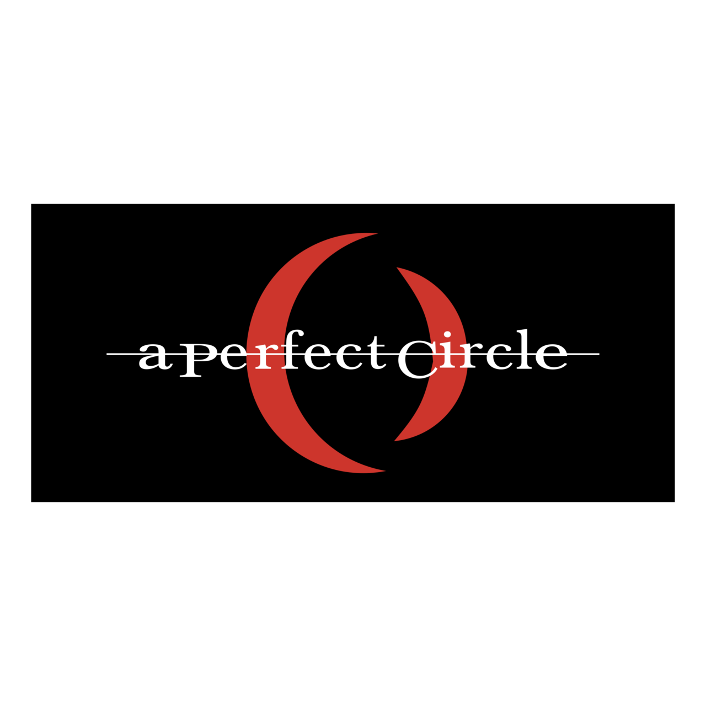
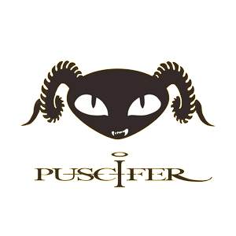

Background Information
Name: Maynard James Keenan
Email: maynardjameskeenan@gmail.com
Date of Birth: April 17, 1964
Occupation: Singer, Songwriter, winemaker
Location: Beverley Hills, California
My Bands
Tool
Tool is an American rock band from Los Angeles. Formed in 1990, the group consists of vocalist Maynard James Keenan, guitarist Adam Jones, drummer Danny Carey and bassist Justin Chancellor, who replaced founding member Paul D'Amour in 1995.

A Perfect Circle
A Perfect Circle is an American rock band formed in Los Angeles, California in 1999 by guitarist Billy Howerdel and Tool vocalist Maynard James Keenan.

Puscifer
Puscifer is an American rock group formed in Los Angeles by Maynard James Keenan, known as the lead singer of the bands Tool and A Perfect Circle. Initially, Keenan was the only permanent member.